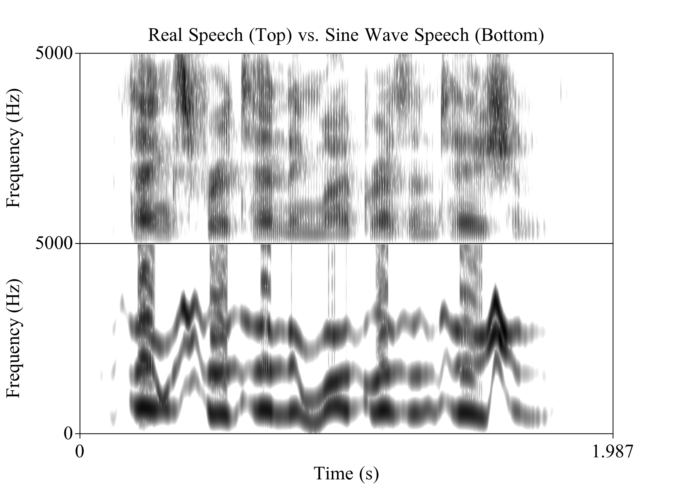
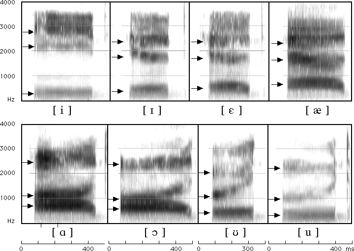
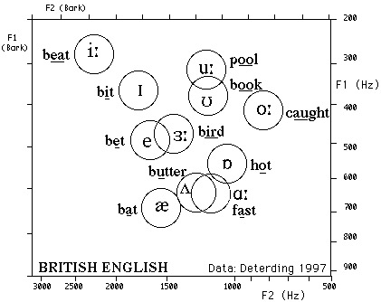
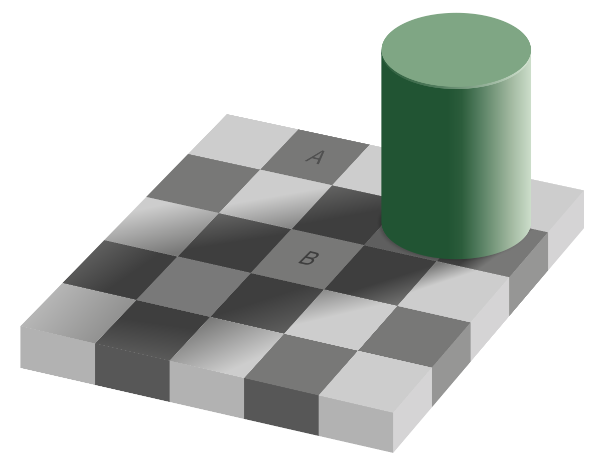

### Sine Wave Speech - Take an existing speech sample, and generate sine waves approximating the formants ---  --- ### Sample Sine Wave Speech F1: <audio controls> <source src="phonmedia/thanksforattendingf1.mp3" type="audio/mp3"> </audio> F2: <audio controls> <source src="phonmedia/thanksforattendingf2.mp3" type="audio/mp3"> </audio> F3: <audio controls> <source src="phonmedia/thanksforattendingf3.mp3" type="audio/mp3"> </audio> Combined: <audio controls> <source src="phonmedia/thanksforattendingsine.mp3" type="audio/mp3"> </audio> Original: <audio controls> <source src="phonmedia/thanksforattendingorig.mp3" type="audio/mp3"> </audio> ---  <small>Different American English vowels, as spoken by a male speaker</small> --- Date: <audio controls> <source src="phonmedia/date1.mp3" type="audio/mp3"> </audio> Debt: <audio controls> <source src="phonmedia/date12.mp3" type="audio/mp3"> </audio> ?: <audio controls> <source src="phonmedia/date4.mp3" type="audio/mp3"> </audio> ??: <audio controls> <source src="phonmedia/date8.mp3" type="audio/mp3"> </audio> ???: <audio controls> <source src="phonmedia/date6.mp3" type="audio/mp3"> </audio> --- ### Let's do an experiment! <audio controls> <source src="phonmedia/date_debt_11_steps.mp3" type="audio/mp3"> </audio> --- The first and last sounds have formants like the typical English /eɪ/ and /ɛ/vowels <img src="phonmedia/datedebtspectrogram.png"> <audio controls> <source src="phonmedia/date_debt_11_steps.mp3" type="audio/mp3"> </audio> --- <img class="big" src="phonmedia/ipaformantsgraph.png"> --- <img class="big" src="phonmedia/clearspeech_speakeraverages.png"> --- <img class="big" src="phonmedia/vowelchart_variation.jpg"> ---  --- <img class="big" src="phonmedia/clearspeech_speakeraverages.png"> --- <img class="big" src="phonmedia/clearspeech_alltokens.png"> --- <img class="big" src="phonmedia/clearspeech_alltokensellipses.png"> --- <img class="big" src="humorimg/trainwreck.png"> --- ### *Information Conveyed by Vowels* * Ladefoged and Broadbent 1957 * Six versions of an introductory sentence were synthesized, each with different formant structures * Four test words were synthesized as well * Listeners heard different combinations of test words and sentences * *If vowel perception is about absolute frequencies, the prior sentence shouldn't matter!* --- <img class="big" src="phonmedia/ladefogedbroadbent/ladefogedbroadbent_chart1.png"> --- <img class="big" src="phonmedia/ladefogedbroadbent/ladefogedbroadbent_chart2.png"> --- # 1957! --- They had to paint what they wanted on glass <img class="big" src="phonmedia/ladefogedbroadbent/ladefogedbroadbent_glassslide.png"> --- Then feed it into an analog sound synthesizer <img class="big" src="phonmedia/ladefogedbroadbent/ladefogedbroadbent_machine.png"> --- ### The results weren't too pretty Stimulus #4: <audio controls> <source src="phonmedia/ladefogedbroadbent/ladefogedbroadbent_please4.mp3" type="audio/mp3"> </audio> Stimulus #5: <audio controls> <source src="phonmedia/ladefogedbroadbent/ladefogedbroadbent_please5.mp3" type="audio/mp3"> </audio> Stimulus #6: <audio controls> <source src="phonmedia/ladefogedbroadbent/ladefogedbroadbent_please6.mp3" type="audio/mp3"> </audio> --- ### Different contexts led to different perception! <img class="big" src="phonmedia/ladefogedbroadbent/ladefogedbroadbent_graph.png"> --- ### Ladefoged and Broadbent: Conclusions > “The linguistic information conveyed by a vowel is largely dependent on the relations between the frequencies of its formants and the formants of other vowels occurring in the same auditory context” * This set the stage for future work in normalization! --- ## So, uh, how's that work going? --- We've got two main theories! --- ### Speaker-intrinsic vowel space normalization * Normalization is a process that “happens” * You meet somebody, you create a model of their vowel space, and you move on * These models of speaker vowels are maintained in memory * One model per person, and a new model each time! --- ### Speaker-extrinsic vowel space normalization * We store information from *every vowel we hear*! * Normalization is then just bulk comparison and probability * Vowel identities are probabilistically determined * One might start with an “English” vowels model * Then, you build a per-speaker exemplar cloud * Both your per-speaker and overall models change --- <img class="big" src="phonmedia/clearspeech_alltokens.png"> --- ### We don't know which is more accurate! --- ### What do we know about normalization? * It’s not just about the point vowels (/i, a, u/) as Joos suggested (Verbrugge et. al. 1976) * Context influences Normalization (as in Ladefoged and Broadbent) * Knowledge about the speaker (gender, sociolinguistic data) influences normalization (Strand 2000) * Recent context might be more important than older context (Ciocca, Wong, et al. 2006) * The normalization process shows up in reaction time during vowel identification tasks (Haggard and Summerfield 1977) --- ### What else do we know about normalization? * Breath sounds don’t provide good information for normalization, and F0 isn’t a critical factor (Whalen & Sheffert 1997) * More context seems helpful, but only to a certain point (Kakehi 1992) * We have to normalize consonants too * Some evidence that vowel formants are used to normalize /s/ vs. /ʃ/ * Vowel nasality appears to require normalization too (Styler 2017) * Infants can normalize to vowels (Kuhl 1979) * So can dogs (Baru 1975) and Zebra Finches (Ohms et al 2009) --- These finches are a *major* problem. --- <section data-background="phonmedia/zebrafinch_intrinsic.jpg"></section> --- <section data-background="phonmedia/zebrafinch_extrinsic.jpg"></section> --- <section data-background="phonmedia/zebrafinch_takethat.jpg"></section> --- ### This suggests that normalization may be a more general cognitive process - Other animals show awareness of vocal tract size differences - 'Female koalas prefer bellows in which lower formants indicate larger males' (Charlton et al 2012) - "Attributing variation to cause" is something we're generally good at - Color Normalization --- <img class="big" src="phonmedia/the_dress.png"> ---  --- <img class="big" src="img/checkerboard_illusion_line.png"> --- "OK, OK, we get it. Nothing's real. Everybody varies. Speech study is impossible. Let's change to syntax." --- ## How do we cope as researchers? --- ### Mathematical Normalization - Not cognitive theories, but useful for people who want vowel variation “out of their way” > “Various algorithms have already been proposed for this purpose. The criterion for their degree of success might be that they should maximally reduce the variance within each group of vowels presumed to represent the same target when spoken by different speakers, while maintaining the separation between such groups of vowels presumed to represent different targets.” (Disner 1979) - Allows for more principled across-speaker comparison - Statistical in nature, rather than contextual or “linguistic” --- ### Lobanov (1971) Normalization <img src="phonmedia/lobanov_equation.gif"> - σ is the Standard Deviation of all tokens around the vowel mean - Done for each formant, for each vowel - Leaves you with formant points for each token which are more comparable across speakers - This can be done on your own, or using [NORM](http://lingtools.uoregon.edu/norm/norm1.php) or vowels() in R --- ## Danger!! <img class="small" src="img/schwaandcrossphones.png"> --- ## **Vowel Normalization is imperfect** - It reduces across-speaker variability, but doesn't remove it completely - The end results are suitable only for rough comparison among speakers - The resulting numbers are abstractions - Disner finds these algorithms good within language - But for cross-language analyses, things get dangerous - **Don't pretend it's solved the problem!** - It's just makes it possible to make basic comparisons --- ### Wrapping up * Formants (F1 & F2) are the primary means of identifying vowels * Vowel charts, although well-intentioned, are dirty, dirty abstractions * Vowel perception is complicated by the enormous variation between speakers and tokens * Phonology, Context, and Secondary Cues help to make things perceptually easier * There's not a strong consensus on how exactly we normalize across speakers - Or how Zebra finches do * Vowel perception is basically magic --- <section data-background="img/hogwarts.jpg"></section> --- <huge>Thank you!</huge> http://savethevowels.org/talks/vowelperception_advanced.html --- # References Baru, A. V. (1975). Discrimination of synthesized vowels /a/ and /i/ with varying parameters (f0, intensity, duration, # of formants) in dog. In G. Fant, & M. A. A. Tatham (Eds.), Auditory Analysis and perception of speech. New York: Academic Press. Ciocca, V., Wong, N. K. Y., Leung, W. H. Y., & Chu, P. C. Y. (2006). Extrinsic context affects perceptual normalization of lexical tone. The Journal of the Acoustical Society of America, Vol. 119, No. 3, 1712-1726. Charlton, B. D., Ellis, W. A. H., Brumm, J., Nilsson, K., and Fitch, W. T. (2012). Female koalas prefer bellows in which lower formants indicate larger males. Animal Behaviour, 84(6):1565– 1571. Disner, S.F. (1980). Evaluation of vowel normalization procedures. The Journal of the Acoustical Society of America, Vol 67(1), 253-261. Joos, M. (1948). Acoustic Phonetics - Supplement to Language. Baltimore: Linguistic Society of America. Ladefoged, P., & Broadbent, D. E. (1957). Information Conveyed by Vowels. The Journal of the Acoustical Society of America, Volume 29, Number 1, 98-104. Lobanov, B. (1971). Classification of Russian Vowels Spoken by Different Speakers. The Journal of the Acoustical Society of America, 49(2B):606–608. Ohms et al. Zebra finches exhibit speaker-independent phonetic perception of human speech. Proceedings of the The Royal Society of Biological Sciences (2009) Rositzke, H. A. (1939). Vowel-Length in General American Speech. Language, Vol. 15, No. 2, 99-109. Verbrugge, R. R., Strange, W., Shankweiler, D. P., & Edman, T. R. (1976). What information enables a listener to map a talker's vowel space? Journal of the Acoustical Society of America, Vol. 60, No. 1, 198-212. Whalen, D. H., & Sheffert, S. M. (1997). Normalization of Vowels by Breath Sounds. In K. Johnson, & J. W. Mullenix (Eds.), Talker Variability in Speech Processing (pp. 133-143). San Diego, CA: Academic Press Ltd.